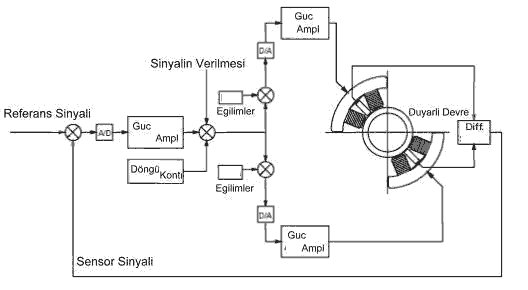
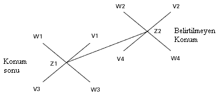
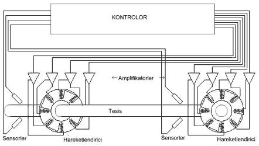

|
3
- MANYETÝK YATAKLAR NASIL ÇALIÞIR?
3.1.
Genel Anlamda
Genel
anlamda manyetik yataklarýn uygulanmasý ferromanyetik çekim
özelliðine sahip elektromanyetik esaslara dayanmaktadýr. Gerek
elektromanyetik stator yatak içersinde, gerekse manyetik alanýn
meydana getirilmesinde bir ferromanyetik rotor geliþtirilmektedir.
Doðal eðilim gösterebilen statorlardan, iyi bir çekim gücüne
sahip rotora kadar her ikisi arasýnda iletiþim kurulmasý kontrolün
amacý içersindedir. Kontrol, manyetik alanýn ayarlanmasýnda
ve rotorun hazýr konumda tutulmasýnda gereksinim duyulmaktadýr.
Kontrol sistemlerinin en yaygýn kullanýmý, þaftýn dönüþünü
kontrol altýnda tutmaktýr. Manyetik alanýn amplifikatörlere
doðru aktarýlmasý, ayarlanmasý ve bunun için gereken bilgilerin
tam olarak saðlanmasý için kontrol sistemlerine ihtiyaç duyulmaktadýr.
Bu sebeplerden dolayý rotorun hazýr konumda tutulmasý, þaftýn
ve olasý deðiþimleri kontrol altýna alýnmasý saðlanabilmektedir.
Bir aktif manyetik yatak sisteminde elektromanyetik yatak
alanýn oluþmasý, sensörlerin (algýlayýcýlar) pozisyonu, kontrol
sistemi ve amplifikatörler Þekil 3.1'de görüldüðü gibi gösterilmiþ,
yatak hareketlendiricileri ve sensörler makinenin içine yerleþtirilmiþtir.
Kontrol sistemi ve sensörler, genel olarak küçük bir dereceye
kadar yerleþtiriebilirler.

Þekil 3.1. Aktif Olarak Çalýþan Manyetik Yatak Sistemi
3.2. Eksenlerin Yöneltilmesi
Konvensiyonel
olarak resimlenen aþaðýdaki diyagramda (Þekil 3.2). 5 eksenli
manyetik yataklarda eksenlerinin kullanýlmasý gösterilmiþtir.

Þekil
3 .2. Manyetik Yataklarda Eksen Tanýmlamalarý
3.3. Hareketlendirici - Radyal Yataklar ve Yataktaki Görevleri
Tipik
bir sistemin oluþumu bir itici yatak ve iki radyal yatakta
gerçekleþmektedir. Bu stator ve sistemi monte edilen manyetik
yatak þaftýn üzerine ayarlanmýþ ferromanyetik rotorun oluþturduðu
aerodinamik kuvvetler, bu stator mýknatýslar sayesinde ortadan
kaldýrýlabilmektedir. Rotor, saftýn üzerine bir tabaka halinde
monte edilmiþ küme þeklinde bulunan bileziklerin bir bütün
halidir. Bu bilezikler çok ince tabakalar halindedir. Yatak
içersinde girdap dolayýsýyla oluþan kayýplarýn azaltýlmasýný
ve yataðýn her durumdaki tepkisinin düzeltilmesini saðlamak
için bu bilezikler ince olarak tasarlanýrlar. Stator dört
adet mýknatýs parçasýndan oluþmaktadýr. Stator ince tabakalar
halinde kutuplarý birbirini karþýlayacak þekilde iç çaplarý
üzerine yýðýn halinde yapýlmaktadýr (Þekil 2.5). Bobinler
herbir kutubun etrafýna çevrilmiþtir. Bu sebepten dolayý manyetik
yatak içersinde stator 4 çeyreðe bölünmüþtür. Her çeyrekte
bobinler çevirdiði bölge içersinde iþlevlerini seri bir þekilde
yerine getirmektedirler. Bu her çeyrekteki iþlev bir elektro
manyet olarak ortaya çýkmaktadýr. Makinelerde tipik olarak
bu bölüntüler, yataða göre 45° açý yaparlar. Her bölüntünün
karþýtý bir eksen oluþturur ve bununla birlikte her radyal
yatak en az iki eksenli olarak tanýmlanabilir.
3.4.
Kontroller - Ýtici Yataklar ve Yataktaki Görevleri
Endüstriyel
makine sistemlerinde, eksenel ya da itici yatak iki adet statoru
kapsamaktadýr. Statorlar som çelikten yapýlarak gene ayný
malzemeden yapýlan takozlarla desteklenirler. Statorlar, radyal
oluklar aralarýna takoz olarak yerleþtirilmiþ olan ince tabakalý
elemanlar olarak adlandýrýlýrlar ve yataðýn tepkisin düzeltilmesi
için kullanýlýrlar. Ýtici statorlar yüzeyleri bobinlerle doldurulmuþ
bir yada iki dairesel oluklu mekanizmaya sahiptir. Rotorun
her bir kenarýna monte edilen bu statorlarla itici yataktaki
eksenel kuvvetler (aerodinamik kuvvetler) her iki yönde önlenebilmektedir.
Saftýn pozisyonunun tespit edilmesi, sensörlerin aldýðý pozisyonuna
göre bu sinyallerin iletilmesinde kontrol sistemi kullanýlmaktadýr.
Þaftýn yerinden oynamasý gibi pozisyonlarda hatalarýn tespit
edilip, bunu düzeltmeye yönelik sinyaller yardýmý ile hata
durumunu tanýmlanmasý ve iþlemlerin gerçekleþtirilmesi saðlanabilmektedir.
Ýlk sinyal yataðýn güncel o anki durumunun belirtildiði sinyallerdir.
Bunlar yataðýn kontrolü için gereklidir (Þekil 3.1).
3.5. Kontrol Sistemleri Nedir? Ýþlevleri Nelerdir?
Manyetik
yataðýn kontrol edilmesi, saft pozisyonunun geri iletilmesi
bilgisi, kontrol sisteminin müsaade ettiði miktar kadar olmaktadýr.
Kontrolün geri iletilmesi kapalý konumda þaftýn bir dönüþü
ile ifade edilmekte ve þaftýn duraðan pozisyonda tutulmasý
için bu iþlemler seri olarak tekrarlanýr. Örnek adlandýrma
(ilk adlandýrma), þaft merkez pozisyonunun üzerinde olduðu
anda sinyal artýþý saðlanýp merkez pozisyonuna getirilmesi
ile dengeye alýnmasý ile gerçekleþtirilmektedir. Normalde,
manyetik yatak kontrolü sinyallerin giriþ ve çýkýþ (SISO Single
Input - Single Output) davranýþlarýna göre saðlanmaktadýr.
Bu geçerli olan kontrol, uygun eksen deðiþtirilmesi ile bir
algýlayýcýnýn sebep olmasýyla ortaya çýkan güncel bir bilgidir.
Kontrol sisteminin unsurlarýnýn kapsamý düþünüldüðünde bir
pozisyonlu sensor ve buna eþlik eden elektronik devreler,
kontroller ve amplifikatör gelmektedir (Þekil 3.3).

Þekil 3.3. Ýdeal Kontrol Sistemi
3.5.1. Sensorler (Algýlayýcýlar)
Sensörler,
saft hakkýndaki bilginin kontrol sistemine iletilmesinde ve
elektrik voltajýnýn uygun düzeyde tutulmasýnda bir nevi kontrol
görevi görmektedirler. Normalde saftýn hazýr konuma geçmesinde,
sensorlerin ayarý ile mevcuttur. Sensorler hüküm barýndýrmayan
voltajla yüklenirler (yalýtkandýrlar).
3.5.2.
Kontrolör
Sensorlerin
bulunduðu konum itibari ile algýlayýcýlardan gelen voltaj
sinyallerine cevap veren bir iþlemcidir. Bu tür bilgilere
sahip iþlemci amplifikatörlerin ihtiyacý oranýnda iþlem yapar.
Kontroller genel olarak, geniþliðe göre eðim gösteren deðiþtirici
(PWM) jeneratör (Þekil 2.11), dijital sinyal iþlemcisi, analogtan
dijitale çeviren çeviriciler ve anti - alizenik filtrelerden
oluþmaktadýr. Algýlayýcýlardan alýnan gerilim doðruca anti-alizanik
filtrelerden geçirilerek bu sayede sinyallerde oluþan yüksek
gerilimler atýlýr. Yüksek gerilimler ses dalgasý oluþturmakta
ve bu ses dalgasý þaftýn hatalý bir konumda durmasýný sebebiyet
verebilmektedir. Ek olarak kontrolör, bu sinyali periyodik
olarak örnek teþkil etmesi amacýyla yayýnladýðý için, yüksek
frekans bilgilerinin bazýsý düþük, hatalý frekans olarak kontrolör
içine alýnabilmektedir. Bunun için diðer adýyla bilgi danýþmaný
olarak bilinen kontrolör tarafýndan cevaplanmaktadýr. Yüksek
frekansýn uzaklaþtýrýlmasýndan sonra anologtan dijitale çeviren
sayýsal dönüþtürücü (A / D) tarafýndan pozisyon sinyali, örnek
olarak gönderilmeye baþlanýr. Belki bir forma sahip voltaj
sinyalleri, dijital sinyal iþlemcisi tarafýndan iþlemi gerçekleþtirilebilir.
Bu üretim sonunda þaftýn hatalý olan pozisyonunun düzeltilmesi
için gerekli, orantýlý bir çýkýþ yapýlarak iþlem gerçekleþtirilmektedir.
Bu iþlemler gerçek yatak hareketleyicisine benzetilmekte olup,
bu iletileri sezinlese dahi filtrelenir ve A / D sayýsal dönüþtürücüsü
tarafýndan örnek olarak yayýnlanýr. Bu gerçek ve güncel olan
sistem arasýndaki hata PWM sinyali olarak tanýmlanarak amplifikatöre
gönderilir. Bu gönderilen bilgi genþliðine göre eðilim gösteren
frekans deðiþtirici (PWM) bobinlere gönderilerek PWM dalgasý
oluþturulur, buradan da bu dalgalar amplifikatörlere gönderilir.
Bu yapýlan güncel istek doðrultusunda yapýlacak olan kontrol
daðýtýmý þafta aldýrýlan sonraki pozisyondan önce, daha iyi
olmalýdýr. Bu sinyal gönderimi ile yapýlan kontrol daðýtým
iþlemi 10kHz hýzýnda gerçekleþmektedir.
3.5.3.
Amplifikatörler
Her
yatak, bobinlerinin ve rotor boyunca herbir eksen pozisyonun
hatasýz olarak saðlanmasý, çekici kuvvetlerin meydana getirilmesi
için birkaç amplifikatöre sahiptir. Temel olarak amplifikatörler
voltaj anahtarlarýndan oluþur. Bunlarýn yüksek frekanslarda
açýlýp kapatýlmasý ve komut edilmesi kontrolör tarafýndan
saðlanmaktadýr.
3.7.
Rotor Dinamikleri
Makine
operasyonlarýndan geçirilen bir manyetik yatak sisteminin
gösterdiði performans ile sensörlerin yerinin tayin edilmesi
gibi etki eden faktörlerin en iyi þekilde ifade etme, rotor
sisteminin incelenmesine olanak saðlamaktadýr. Yapýlan yeni
incelemeler; 'Bu sistemden nasýl daha verim alabiliriz?',
'En iyi faydayý nasýl saðlarýz?' gibi sorulara yanýt vermektedir.
Yapýlan bu araþtýrma sonuçlarý hoþnut edici olmaya baþladýðýnda,
manyetik yatak ve kontrol sistemlerinin etkileri tanýtýlarak
daha detaylý analiz sonuçlarý alýnmaya baþlanmýþtýr. Bu test
sonuçlarý ve daha kalýcý bilgilerin ortaya çýkartýlmasý art
arda yapýlan testler sayesinde rotor hakkýnda sonuçlar bulunabilmektedir.
3.8.
Yardýmcý Ýniþ Sistemi
Sonuçta þöyle bir kanýya varabiliriz 'Manyetik yatakta güç
kaybý var ise bu kayýp ne oluyor?' Kutuplar, manyetik yatak
statorlarý üzerine rotorun dýþýna kadar kaplanýp, makine yüzeyine
dikkatli bir biçimde iþlenmektedirler. Usulde, yataklarda
ki bu yüzeylerde güç kaybýnýn korunmasý yardýmcý iniþ sistemi
ile baðlanmaktadýr. Her konvensiyonel kaymalý yataklarda,
ya da pasif iniþli plakalarda tipik olarak bu kullanýmlar
mevcuttur. Hareket elemanýna emniyet mesafesi býrakýlmasý
½ gibi bir orandýr. Sonuçta þöyle bir kanýya varmamýz mümkündür;
dönüþ esnasýnda güç kayýplarý yardýmcý bir sistem tarafýndan
tutulmaktadýr. Bu sebepten dolayý yataklar bazen destekleyici,
tutucu ya da duran yataklar olarak da adlandýrýlmaktadýr.
6
- MANYETÝK YATAKLARIN AVATAJLARI ve DEZAVANTAJLARI
6.1.
Manyetik Yataklarýn Avantajlarý
1.
Manyetik yataklarda þaft, yatak içinde baðýmsýz olarak havada
asýlý kaldýðýndan dönme esnasýnda sadece hava ile temasý söz
konusudur. Bu yüzden mekaniksel sürtünmeye maruz kalmaz .
2. Manyetik yataklar temiz bir çevre için kullanýmýnda herhangi
bir ters unsur içermemektedir. Yaðlama sistemlerinin olmayýþý,
yaðýn ýsýnmasýndan meydana gelen yað buharlarýnýn da oluþmamasý,
buna baðlý olarak da havaya ve yataðýn kendisi için kirlilik
oluþturmaz . Bu sebeplerden dolayý bakým gerektirmez.
3. Yüksek hýzlara kýsa bir sürede ulaþabilirler ve bu hýzlarda
verimli olarak çalýþýrlar. Oldukça yüksek rotor hýzýna sahiptirler.
Þaft yataðýnýn boyutlarý da çok büyük ölçülerde olduðu gibi,
çok küçük ölçülerde de yapýlabilmektedir.
4. Sürtünmeden dolayý meydana gelen kayýplar normal konvensiyonel
yataklara nazaran 5 - 20 kat daha az olmasý sebebiyle yapýlan
parasal sarfiyatlar oldukça azdýr. Fazla bakým istemez. Mesela
kullanýlan sensörlerin her 10 yýl da bir bakýmý yapýlýr.
5. Mekanik sürtünmenin olmayýþý bir açýdan yapýlan bakým harcamalarýnýn
olmayýþý anlamýna gelmektedir.
6. Boyut bakýmýndan her türlü büyüklüklerde üretilebilmektedir.
Üretilen yatak aðýrlýklarý, 1gr. - 45400gr. arasýnda deðiþebilmektedir.
Tasarlanan þaft yataðý, (minumum 75 psi (50 kPa)) yüksek kuvvetleri
kaldýrabilecek düzeydedir.
7. Yatak kontrol sistemleri, manyetik yataðýn yüksek hýzda
yapacaðý balanssýzlýðý otomatik olarak ayarlar ve tehlikeli
durumlarda yine otomatik olarak durdurur. Bu nedenle tehlike
arz edecek her durum kontrol altýna alýnmýþtýr.
8. Titreþim yok denecek kadar azdýr. Bu yüzden sessiz çalýþýrlar
.
9. Manyetik yatak ile motorun boþ çalýþma güç kayýplarýnda
%15 lik bir azalma görülmektedir.
6.2. Manyetik Yataklarýn Dezavantajlarý
Diðer
yataklarla karþýlaþtýrma yapýldýðýnda manyetik yataklarýn
dezavantajlarý oldukça azdýr. Bu dezavantajlar da manyetik
yatakla birlikte kullanýlan devrelerin karmaþýklýðýndan ileri
gelmektedir. Bunlar;
1.
Kullanýldýðý sistemler itibari ile oldukça yüksek maliyetlere
sahiptirler.
2. Normal yataklarla karþýlaþtýrýldýðýnda, daha karmaþýk bir
yapýya sahiptirler.
3. Þaftýn ilk konumda dengeye alýnmasý oldukça zahmetli ve
uzun süren bir süreç gerektirir.
4. Manyetik yataðýn üretimine geçilmeden önce protopinin geliþtirilmesi
için normal üretimine harcanan süre kadar bir süreye ihtiyaç
vardýr.
7 - UYGULAMA ALANLARI ve YENÝ YATIRIMLAR
7.1.
Uygulama Alanlarý
7.1.1.
Týp
Manyetik
yatak tasarýmlarýný týp alanýnda kalp üzerinde yapýlan çalýþmalarda
görmekteyiz. Bu alanlarda da, suni kalplerde yaygýn olarak
bilinen sol - karýncýða ait yardýmcý devre (LVAD) için tasarýmlarý
yapýlmaktadýr. Bu uygulamada manyetik yataklar yüksek emniyete
sahiptir. Tasarlanan pompa geometrisinin biyolojik olarak
insan vücuduyla uyum içersinde olmasý, manyetik yataðýn bu
alanda kullanýmýný arttýrmýþtýr.
7.1.2.
Endüstri - Sanayi
Manyetik
yataklar, yüksek devirli makinelerda kullanýþlý bir alana
sahiptir. Manyetik kuvvetlerin tasarýmý olarak bilinen bu
yatak sistemleri, yüzeysel kesiciler ve un ve su deðirmenlerinin
dönen sistemlerinde uygulanabilmektedir. Diðer uygulamalar
olarak da turbo - makine sistemleri ve yüksek hýz motor yataklarýnda
(gaz kompresörleri) yaygýn olarak kullanýlmaktadýr.
7.1.3.
Ulaþým - Taþýma
Manyetik
yataklar, Almanya Messerchimitt - Bolkow - Blohm tarafýndan
yapýlan 'KOMET' araçlarý gibi kritik bir teknoloji alanýnda
tasarlanmaktadýrlar. KOMET olarak adlandýrýlan bu proje içersinde
bir trene uygulanan manyetik yatak sistemi sayesinde trenin
hýzý 360 km / h' ye kadar çýkabilmektedir. Ayný tür kullaným
Japonya' da yürütülen hýzlý tren projesinde de uygulanmaktadýr.
7.1.4.
Uzay Endüstrisi
Manyetik
yataklarýn yüksek emniyet saðlamasý sebebiyle uzay endüstrisinde
kullanýmlarý oldukça yaygýndýr. Bu tür uygulamalarda yataklar
daha çok uydularýn momentum tekerleri üzerinde kullanýlmaya
baþlanmýþtýr. Burada amaç uydularýn uçuþ - tekerleri' ne enerjinin
depolanmasýdýr. Böylece manyetik yataklardan oldukça yüksek
verim alýnmaktadýr.
7.1.5.
Vakum ve Temizlik Alanýnda - Çevresel Temizlik
Manyetik
yataklarýn, mekaniksel faktörlerden etkilenmemesi ve yaðlama
gereksinimi olmamasýndan dolayý, çevreyi koruma amaçlý ve
doðal temizleyici olarak birçok alanda olduðu gibi temizlik
alanýnda da kullanýmý oldukça yaygýnlaþmýþtýr.
8 - MANYETÝK YATAKLARIN DÝÐER YATAKLARLA KARÞILAÞTIRILMASI
8.1.Genel
Olarak
Manyetik
yataklar þu anki bulunduklarý konum itibariyle, endüstride
kullanýlan birçok yatak sistemlerinden neredeyse %100' lük
bir avantaja sahip olmaktadýrlar. Sahip olduklarý ileri teknoloji,
sürtünme ve aþýnma, yaðlamanýn olmayýþý manyetik yataklarý
tamamiyle üstün konuma getirmektedir.
8.2.
Rulmanlý Yataklarla Karþýlaþtýrýlmasý
1.
Rulmanlý yataklar çok saðlam yapýda olmadýklarý için, fazla
zorlanan ve vuruntulu çalýþan muylularda baþarýyla kullanýlmazlar.
Manyetik yataklarýn yüksek güç isteyen vuruntulu yerlerde
(ör: gaz tribünleri) kullanýmý elveriþlidir.
2. Rulmanlý yataklarda yaðlanma bulunduðundan ve toza karþý
çok hassas olduklarýndan tozlu yerlerde kullanýlmalarý doðru
deðildir. Manyetik yataklarda yaðlama sistemi bulunmaz bu
sebepten her ortamda rahat çalýþýrlar.
3. Rulmanlý yataklarda muylu yuvalarýna geçirilirken çok dikkatli
olmayý ve ince alýþtýrmayý gerektirir. Manyetik yataklarda
þaft havada asýlý kaldýðý için bu sorun ortadan kalkmýþtýr.
4. Rulmanlý yataklar çok sesli çalýþýrlar. Manyetik yataklarda
titreþim yok denecek kadar azdýr. Bu yüzden sessiz çalýþýrlar.
5. Rulmanlý yataklar mekaniksel faktörlere kolaylýkla maruz
kalabilmektedir (sürtünme ve aþýnma). Manyetik yataklarda
sürtünme (sadece hava ile) ve aþýnma gibi mekaniksel olaylar
yoktur.
8.3.
Kaymalý Yataklar ile Karþýlaþtýrýlmasý
1.
Kaymalý yataklarýn iç yatak gereçleri aþýnmaya karþý gösterebildikleri
direnç ile doðru orantýlýdýr. Mesela kaymalý bir yatakta iç
gereç olarak çok fazla kullanýlan malzemeler metal, kalay,
bakýr, antimuan ve kurþun alaþýmýdýr. Manyetik yataklarda
ise önemli olan unsur ferromanyetik malzemelerin seçimidir.
2. Kaymalý yataklar bilindiði gibi þaft, muylu ya da mil -
yatak yaðlanmýþ durumda iken çalýþabilmektedir. Bu yüzden
kullanýlan yerlerde yað kirliliði söz konusu olabilmektedir.
Manyetik yataklar çevreyi kirletme açýsýndan tamamiyle çevre
ile dosttur.
3. Kaymalý yataklarda çok yüksek hýzlar elde edilemez. Manyetik
yataklar yüksek hýz gerektiren yerlerde rahatça kullanýlabilir.
4. Kaymalý yataklarda titreþim yüzünden zamanla yatak cývatalarý
gevþeyebilmektedir. Bu yüzden titreþim önemli bir sorundur.
Manyetik yataklarda titreþim tamamiyle etkisiz hale getirilmiþtir.
|